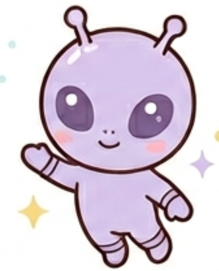

あなたのフレンドタイプは...

GFPH：気まグレイ
あなたは、時間、場所、そして他人の期待というあらゆる枠組みから解き放たれた自由人です。行動原理は常に「その瞬間の気分」で、他人にどう思われるかをほとんど気にしておらず、自分の世界にフラりと引きこもったかと思えば、急に突飛な行動を起こしたりします。
物事に対してどこか冷めていて、時に核心を突く鋭い毒を吐くこともありますが、基本的にはこだわりなく「流されるままにそこにいる」という、掴みどころのない浮世離れした雰囲気を持っています。
友達から見たあなたは、ズバリ「自由すぎるグループの妖精」です。
みんなが「次どこ行く？」「これ流行ってるよね！」と大騒ぎしていても、あなたは全く違う方向を見ていたり、自分の世界に没頭していたりします。会話のキャッチボールをしても、たまに驚くほど的外れな返球が返ってくるため、友達からは「ほんと気まグレイは宇宙人だなｗ」「会話噛み合わなすぎて草」と笑われています。
かと思えば、オブラートを完全に引きちぎったような鋭い毒舌を吐いて場をピリつかせたり、大爆笑を起こしたりします。
友達はあなたを「予測できない存在」だと理解しており、あなたのその理解不能な振る舞いですら、「まぁ気まグレイだしなｗ」「今日も通常運転だな」と、もはや一つのエンターテインメントとして楽しんで受け入れています。
お世辞も言わなければ、他人に執着もしないため、あなたと一緒にいる時間は「お互いに全く気を遣わなくていい時間」になります。その独特のドライさが、友達にとっては最高に居心地が良いのです。
常識の枠にはまらないあなたの行動や発言は、友達にとって思いもよらない刺激になります。あなたがいるだけで、いつもの見慣れた景色が少し変わって見えます。
自分が自由である分、他人の自由や失敗（遅刻やミス）に対しても「あ、そうなんだ」と完全にスルーしてくれる、驚異の器の広さ（あるいは無関心さ）を持っています。
あなたの「みんなをハッピーにしたい」というパッションは最高ですが、全エネルギーが暴走したときに、自分自身が一番すり減ってしまう罠があります。
人が大好きで、みんなで笑顔になりたいという気持ちが強いあまり、その場のノリで奇想天外なボケのアクセルを全開で踏み込みすぎてしまうことがあります。
場を盛り上げることに全力を出し切った結果、解散したあとに持ち前の感受性が裏目に出て、「今日ちょっと悪ノリしすぎたかな……」と、夜一人で激しく落ち込む「一人反省会」を開いてしまいがちです。また、他人の行動に対して寛容だからこそ、グループがどれだけグダグダになっても止めることなく、一緒にお祭り騒ぎを加速させてしまいます。そのため、冷静なメンバーから「楽しかったけど、収集がつかなさすぎて疲れた」と、カオスな空気に圧倒されてしまうことも。
たまには盛り上げる手を少し休めて、みんなと落ち着いた温度感でただ過ごす時間を作ってみてください。常にハイテンションで笑いの中心にならなくても、友達はあなたの素朴な優しさや、一緒にいるだけでホッとする気楽さをちゃんと愛しています。
たまにエンターテイナーを休むことで、お互いに肩の力が抜けた、さらに心地よい一生モノの信頼関係が築けるようになります。